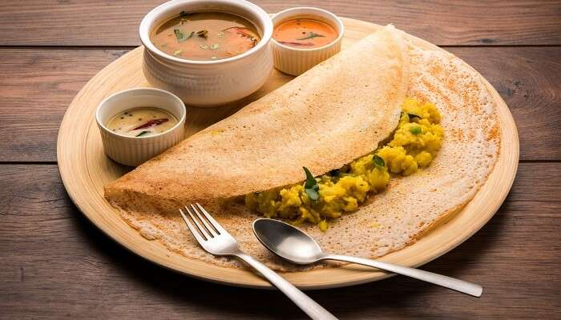

Masala dosa is a popular South Indian dish consisting of a crispy rice and lentil crepe filled with a spicy potato filling. Here’s a step-by-step guide to making masala dosa at home:
Ingredients
For Dosa Batter:
1 cup rice
1/3 cup urad dal (split black gram)
1/4 teaspoon fenugreek seeds
Salt to taste
Water (for soaking and grinding)
For Potato Filling:
3 large potatoes, boiled and mashed
1 large onion, finely chopped
2 green chilies, finely chopped
1 teaspoon mustard seeds
1 teaspoon cumin seeds
1/2 teaspoon turmeric powder
A pinch of asafoetida (hing)
A few curry leaves
1 tablespoon oil
Salt to taste
Fresh coriander leaves, chopped
For Dosa:
Oil or ghee (clarified butter) for cooking
Instructions
Preparing the Batter:
Soak the Ingredients:
Rinse the rice and urad dal separately. Soak the rice with fenugreek seeds in water for at least 6 hours. Soak the urad dal separately for the same duration.
Grinding the Batter:
Drain the soaked rice and dal. Grind the urad dal with water to a smooth and fluffy batter. Do the same for the rice and fenugreek seeds mixture. Combine both batters, add salt, and mix well. The consistency should be similar to pancake batter.
Ferment the batter overnight or for about 8-12 hours in a warm place. The batter should rise and become slightly bubbly.
Preparing the Potato Filling:
Tempering Spices:
Heat oil in a pan. Add mustard seeds and let them splutter. Add cumin seeds, curry leaves, and asafoetida.
Cooking the Vegetables:
Add chopped onions and green chilies to the pan. Sauté until the onions turn golden brown.
Add turmeric powder and salt. Mix well.
Adding Potatoes:
Add the boiled and mashed potatoes. Mix everything together and cook for a few minutes. Garnish with chopped coriander leaves. Set aside.
Making the Dosa:
Heating the Pan:
Heat a non-stick or cast-iron griddle (tawa) over medium-high heat. Grease it lightly with oil or ghee.
Spreading the Batter:
Pour a ladleful of batter onto the center of the griddle. Quickly spread it in a circular motion to form a thin crepe.
Cooking the Dosa:
Drizzle a little oil or ghee around the edges. Cook until the edges start to lift and the bottom turns golden brown. No need to flip if you prefer a crispy dosa.
Adding the Filling:
Place a portion of the potato filling in the center of the dosa. Fold the dosa over the filling.
Serving:
Serve the masala dosa hot with coconut chutney and sambar.
Enjoy your homemade masala dosa!